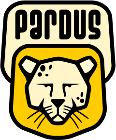

Radyo ve televizyonların takibi Pardus'a emanet...
Radyo ve Televizyon Üst Kurulu (RTÜK) tarafından geliştirilen ve TÜBİTAK Ulusal Elektronik ve Kriptoloji Araştırma Enstitüsü (UEKAE) tarafından gerçekleştirilecek olan Sayısal Kayıt, Arşiv ve Analiz Sistemi (SKAAS), kullanıcı bilgisayarları ve sunucular için işletim sistemi tercihini Pardus yönünde kullandı.
Kurulacak sistem ile Türkiye'de yayın yapan ulusal ve yerel 210 televizyon ve 860 radyo yayınını sayısal ortamda Pardus arşivleyecek..
RTÜK tarafından geliştirilen ve TÜBİTAK UEKAE tarafından gerçekleştirilecek olan SKAAS ile ilgili sözleşme 21 Şubat 2007 tarihinde imzalanmıştı. Türkiye’de radyo ve televizyon yayıncılığı alanında karasal sayısal televizyon deneme yayınına geçilmesiyle başlayan teknolojik dönüşüme paralel olarak, RTÜK yayınları izlemekte ve kaydetmekte kullandığı teknik sistemi yenileyeceğini 2006 yılı başında ilan etmişti. RTÜK merkezinde halen eski teknoloji kullanılarak kaydedilen ve arşivlenen radyo ve televizyon yayınlarının bundan böyle yeni kurulacak SKAAS ile arşivlenip, analiz edilecek. SKAAS Sistemi'nin devreye girmesiyle, Ankara’daki RTÜK merkezinde uydu, kablo ve karasal ortamdan alınan 100 televizyon ve 100 radyo yayını ile yurt çapındaki 258 il ve ilçeden yayın yapılan toplam 210 televizyon ve 860 radyo yayınının, yani tüm yayınların sayısal ortamda kayıt edilmesi, arşivlenmesi, izlenmesi ve analizi sağlanacak.
Pardus Haberleri
-
28 Nisan 2007 // PC Magazine dergisi mayıs sayısında okurlarına Pardus 2007.1 Felis chaus "Çalışan CD" hediye ediyor. Pardus'u bilgisayarına kurmadan kullanmak veya denemek isteyenler için kaçırılmayacak bir fırsat...
-
20 Mart 2007 // Her ay yayınlanan Pardus bülteni, 3. sayısında son bir ayın haberleriyle okuyucu karşısına çıkıyor. Pardus bültenini Türkçe veya İngilizce okumak için tıklayın.

-
23 Kasım 2006 // Pardus'un tanıtımına katkıda bulunmak isteyenler için Pardus 2007 afiş ve düğmeleri yayınlandı. Sitenizde, blogunuzda yayınlamak için siz de hazır kodlarımızdan yararlanabilirsiniz.
Pardus Şehrinizde
-
10 Mayıs 2007 // İzmir - Ulusal BÖTE Öğrenci Kurultayı, Ege Üniversitesi Eğitim Fakültesi Bilgisayar ve Öğretim Teknolojileri Eğitimi bölümü, 15:30
"Özgür Yazılım ve Pardus nedir? Neden Önemlidir?" (A. Murat Eren, Faik Uygur) -
17-18 Mayıs 2007 // Kayseri - Erciyes Üniversitesi Pardus Seminerleri, 09:00-17:00
(Görkem Çetin, İsmail Dönmez, Koray Löker ve Ümran Kamar) -
25 Mayıs 2007 // Artvin - Borçka Anadolu Meslek Lisesi, 18:30-22:00
"Pardus ve Özgür Yazılım" (A. Murat Eren)